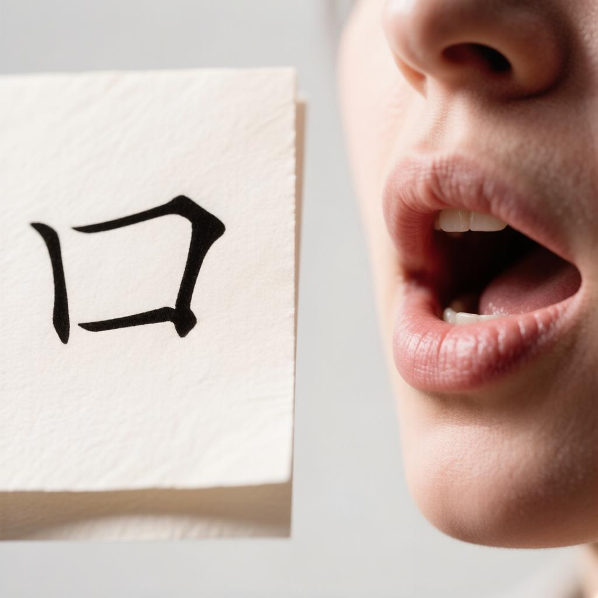
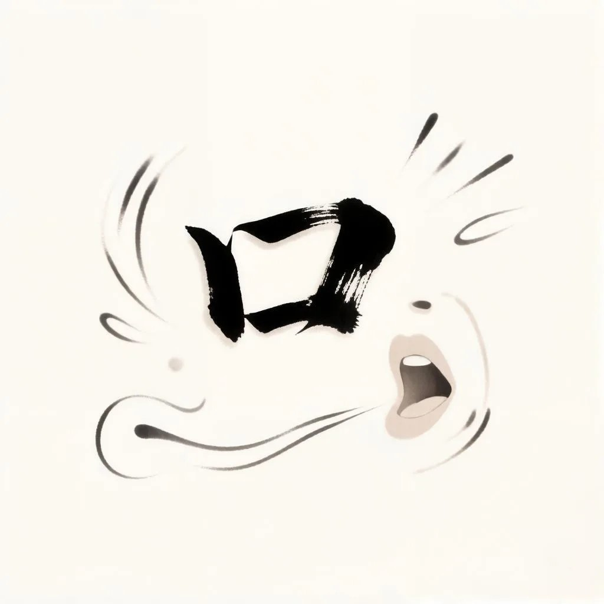
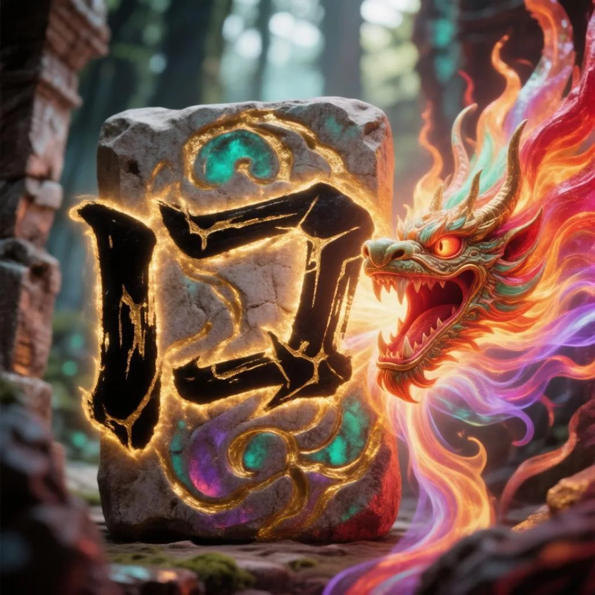

Трактир «Наливай и плач»
🖼 Визуальные ассоциации 口



нажми на картинку, чтобы рассмотреть 🔍
 Синнабон
Синнабон
Мяу-мяу! Я Синнабон — искатель приключений, и это мой любимый трактир. Заглянул пропустить стакан молока — и поделиться с тобой самым первым иероглифом: 口 — «рот»!
Слева гляди внимательно, в центре — рисуй сам, черта за чертой. За старание — волшебные искры! ✨
口
✍️ Тренировка письма
Обведи 口 по чертам — мышкой или пальцем
Черта 0 из 3
✨ Великолепно! Настоящая магия приключений! Синнабон угощает тебя молоком 🥛
Если звук не воспроизвёлся — не удалось загрузить аудио.
Урок 1 · 口 (kǒu) · Часть 1 из 5 — Знакомство с иероглифом